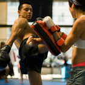
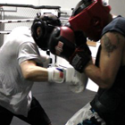
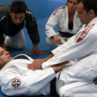
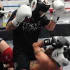
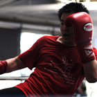

Muay Thai
Muay thai (which simply means the boxing of of Thailand), is the national sport of Thailand. This sport has been around for four centuries. In ancient times, the people of Thailand developed muay thai as a defense against enemy nations and it was tested in hand to hand combat by the ancient warriors of Siam. Muay Thai's effectiveness is unmatched in the world of martial arts due to its simple training approach: keep things basic, using only what works and train, train, train. Since the 1920's muay thai has developed into a modern day sport similar to western boxing and similarly has a global fight circuit. Muay thai makes use of four of the body's weapons: legs, knees, elbows and fists. Muay thai differs from other martial arts, as it does not have a colored belt system typical of karate and tae kwon do. Muay thai fighters test their skills in the ring, but not all practitioners fight. Techniques taught are learned quickly and are easily integrated into daily life. Its simplicity is so effective that the modern form is almost identical to it’s traditional form. Muay thai has evolved to work well with a modern lifestyle. This system provides stress relief, strength, cardio-vascular fitness, self-defense and it is extremely fun. We teach authentic muay thai with basic and advanced techniques. At Fight and Fitness, we give you unmatched instruction from some of the world's greatest trainers. This is a workout that will challenge you both physically and mentally.
Boxing
Whether you are looking for the bay areas best workout or if you want to compete in the ring, we have a program for you. From basic stance and movement drills to ring strategy this class has something for everyone. Much like muay thai, boxing is great for cardio-vascular, stress relief, strength training, self-defense and it is extremely fun. Fight and Fitness is registered and recognized by USA Boxing.
Jiu Jitsu
Known as "arte suave" in Portuguese or the "gentle art," Brazilian jiu-jitsu is a grappling martial art and self-defense system built on the principle that a smaller opponent can be effective against a larger, stronger opponent using leverage, technique and joint-locks or choke holds. Developed by the Gracie family in Brazil, jiu-jitsu continues to be a rapidly growing martial art gaining popularity internationally. Practitioners wear the "gi" that can be used to grip and manipulate their opponent. Classes start with warm up and conditioning, transition to learning technique and drilling, and then end with live sparring or "rolling." Often likened to "human chess" Brazilian jiu-jitsu is an ever-evolving martial art where each movement by one's opponent has a continual response.
MMA
Our mixed martial arts class combines muay thai, boxing, jiu jitsu and judo. This style is commonly referred to as "ultimate fighting". The description says it all. You don't need to be a fighter to participate in this class but be ready for an intense workout.
Private Training
Get the edge with private training!
Private training is an option available to our students for an additional fee. This intense one-hour session is customized for you depending on your individual goals. The session may include (but is not limited to) one-on-one pad training, technique drills, sparring (if you want), and calisthenics.
Rates vary between instructors-please
contact us for more information.
 Alex Ferreira: Jiu-Jitsu & MMA Trainer
Alex Ferreira: Jiu-Jitsu & MMA Trainer